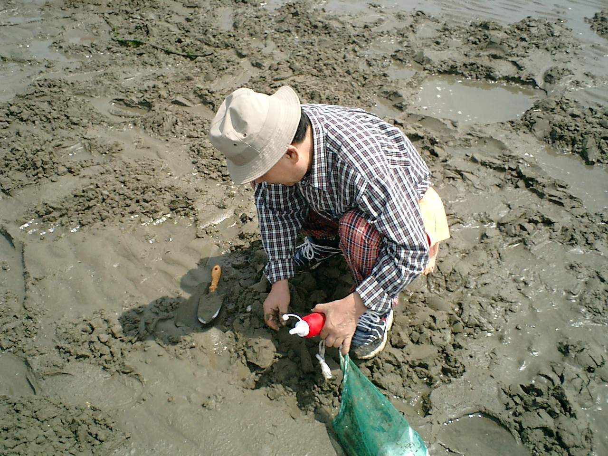

Mt. Fuji. (January 1st, 2005)
Still waiting for snow. (Near KawaKita, Early 2004)
A Meditation Under "the Tree of Buddha" at National Palace Museum in Taipei. (November, 2004)
A sunset from a field in Tatsunokuchi. (October, 2004)
(Click to enlarge the photo.)
Prof. Ohori and Prof. Vestergaard at JAIST Open Campus (June 5, 2004)
My elder sister, father, and mother at Chinese lantern festival. Sent from Korea. (May, 2004)
Moon, Choi, Osaka-san, Higuchi-san, Sasano-san, Hayashi-san at an unknown so-ba restaurant.
(February, 2004)
Himeji castle, very beautiful. (December 28, 2003)
Osaka castle where I learned about Toyotomi Hideyosi and Tokugawa Yieyasu. (December 27, 2003)
Taken from my laboratory on the 5th floor, IS building, JAIST. (December 19, 2003)
The first snow after I came to Japan. At JAIST parking lot. (December 19, 2003)
Taken at YuYu, a restaurant near JAIST. (December, 2003)
Rainbow after the sun shines through the rain (August, 2003)
Moon eager to eat steak at Outback (May, 2003)
Moon at Outback (May, 2003)
The family of my elder brother at Chunjangdae beach (May 4, 2003)
My mother also gathering seashells at Chunjangdae beach (May 4, 2003)

My father gathering seashells at Chunjangdae beach (May 4, 2003)
Moon in "Matrix Reloaded" (May 4, 2003)
Choi at TGIF (May 2, 2003)
My wife at TGIF (May 2, 2003)
Choi studying hard at his laboratory, as always (February, 2003)
Types Summer School at Giens, France (September, 2002)
My wife and I (April, 2002)
Jeff, Morten, Prof Yi, and I at FLOPS 2001, Waseda University. (March, 2001)
My wife and I at Cheju island (May, 1999)
My wife and flowers, which are not two (April, 1998)
My wife when we went to the second Kwangju Biennale (November, 1997)
My wife when she was a university student (May, 1991)
A picture of mine from the graduate school album (May, 1995)